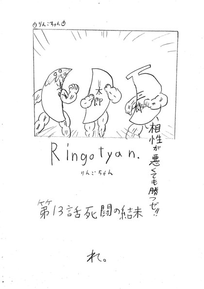
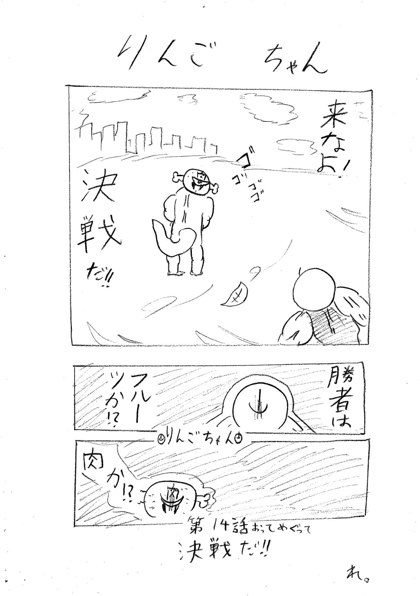
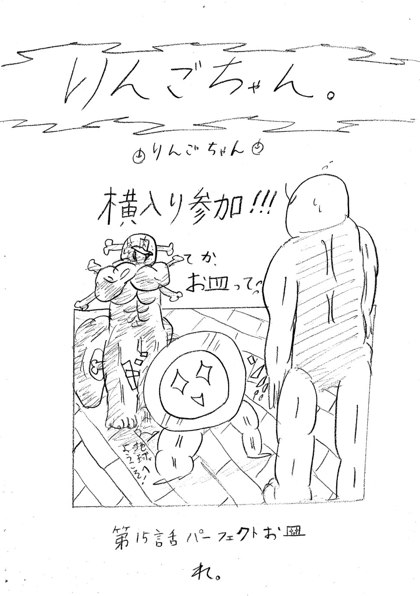
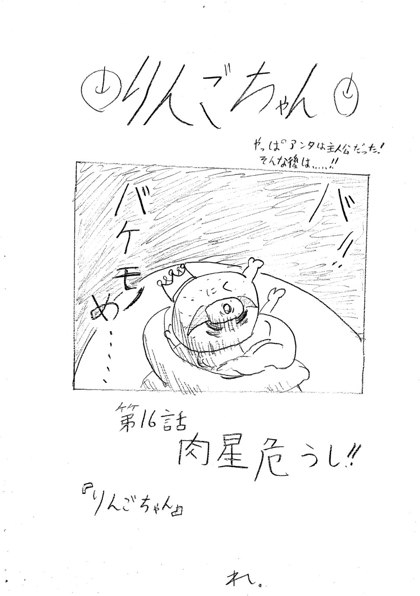
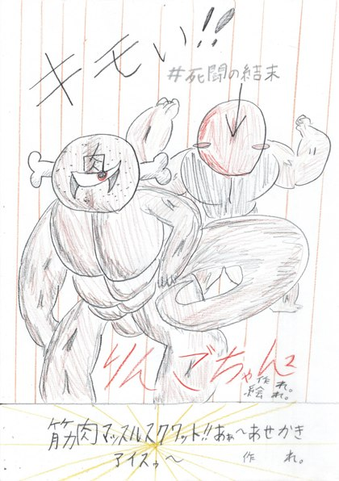

りんごちゃん
作者：れ。
全16話
｜
 第1話 りんごちゃん1世読む
第1話 りんごちゃん1世読む 第2話 生きろ！！読む
第2話 生きろ！！読む 第3話 てきが来た読む
第3話 てきが来た読む 第4話 戦地読む
第4話 戦地読む 第5話 にがす読む
第5話 にがす読む 第6話 動け！にげろ！読む
第6話 動け！にげろ！読む 第7話 誇り読む
第7話 誇り読む 第8話 ついせき読む
第8話 ついせき読む 第9話 精神とケンカ読む
第9話 精神とケンカ読む 第10話 かじゅうバズーカ読む
第10話 かじゅうバズーカ読む 第11話 地球に！！読む
第11話 地球に！！読む 第12話 キャロットうめぇッ！！読む
第12話 キャロットうめぇッ！！読む
第13話 死闘の結末読む
第14話 おってめぐって読む
第15話 パーフェクトお皿読む
第16話 肉星危うし！！読む最新話 第16話を読む全2巻
｜
第1巻全162ページ・第1〜12話収録読む
第2巻全54ページ・第13〜16話収録読む最新巻 第2巻を読む作品情報
作品名：りんごちゃん
作者：れ。
連載状況：休載中・未完結